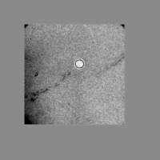

| .OPERATION | PD | ; Pad image with borders |
| .INPUT FILE: | sav_pp | ; File name (input) |
| .OUTPUT FILE: | pd | ; File name (output) |
| .DIMENSIONS: | 200,200 | ; Size of new image |
| .AVERAGE, BORDER, MINMUM OR CIRCULAR (Y/N/B/M/C): | Y | ; Use average background |
| .TOP LEFT COORDINATES: | 30,30 | ; Location of top left corner |
| SMALL INPUT | OUTPUT | |
|---|---|---|
|  | |
| sav_pp | pd |